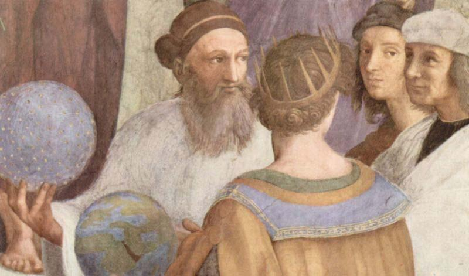

Dars-e 13 — Āšpazi‐ye Sāmān
Matn ♫ Āšpazi‐ye Sāmān
Sāmān, barādar‐e Sārā, hanuz āšpazi rā xub yād nagerefte‐ast. Mādar‐aš bārhā hameciz rā be u towzih dāde‐ast. Be u yād dāde‐ ast, ke ce bexarad, az kojā xarid konad, cegune qazā rā āmāde konad va cetowr miz rā becinad. Tā konun candin bār tahdig‐e berenj‐aš suxte‐ast. Yek bār Qormesabzi dorost karde bud, ke hesābi šur šode bud. Yek daf’e ham farāmuš karde bud, ke ojāq rā xāmuš konad. Vali Sāmān bā Susan šartbandi karde‐ast, ke inbār qazā‐yaš xošmaze šavad. U qarār‐ast, emruz Fesenjān dorost konad. Xodā be xeyr konad!
Pāsox bedeh!
1. Sāmān ce kār‐i rā hanuz yād nagerefte‐ast?
2. Mādar‐e Sāmān be u ce kārhā‐yi yād dāde‐ast?
3. Āyā Sāmān tā be hāl tahdig‐e berenj rā suzānde‐ast?
4. Sāmān bā Susan ce šart‐i baste‐ast?
5. U qarār‐ast, emruz ce bepazad?
Sāxtār
Sāxtār 47 Esm‐e maf’ul
| Setāk‐e gozašte | Esm‐e maf’ul | ||
| bast | baste | ||
| + | “‐e” = | ||
| šenide | |||
| šenid |
Nokte
- Esm‐e maf’ul be onvān‐e sefat ham be kār miravad: reside, šoste, ālude.
Sāxtār 48 Gozašte‐ye naqli
Sāxtār 49 Gozašte‐ye dur
| (man) | borde | budam |
| (to) | budi | |
| āmade | ||
| (u) | gofte | bud |
| (mā) | nevešte | budim |
| šoste | ||
| (šomā) | budid | |
| rafte | ||
| (ānhā) | budand | |
Nokte
- Gozašte‐ye dur amal‐i rā bāzgu mikonad, ke piš az amal‐e digar‐i anjām gerefte‐ast: Piš az āmadan‐e u man rafte budam. - Hargāh biš az yek esm‐e maf’ul dāšte bāšim, mitavānim gozašte‐ye naqli/dur rā yek bār besāzim: Man u rā dide‐vo pasandide‐am / pasandide budam.
Irān‐o irāni Zartošt
Goftogu Televiziyon‐emun xarāb šode.
Pāsox bedeh!
| Porseš | Pāsox |
| Tā konun film‐e irāni dide‐i? | – Bale, do bār film‐e irāni dide‐am. |
| – Na, hicvaqt film‐e irāni nadide‐am. | |
| Tā hālā kas‐i az šomā film gerefte‐ast? | – Bale, |
| – Na, aslan | |
| Tā konun muš‐i be in gondegi dide‐i? | – Bale, |
| – Na, hargez | |
| Tā konun damāq‐i be in pahni dide‐i? | – Bale, |
| – Na, hanuz | |
| Tā konun be Āfriqā rafte‐i? | – Bale, |
| – Na, hargez | |
| Tā hālā dar bāre‐aš ciz‐i šenide‐i? | – Bale, |
| – Na, hanuz | |
| Tā hālā angošt‐i be in bāriki dide‐i? | – Bale, |
| – Na, aslan | |
| Tā konun qelyān kešide‐i? | – Bale, |
| – Na, hargez | |
| Tā hālā ranginkamān dide‐i? | – Bale, |
| – Na, hanuz | |
Gozašte‐ye dur besāz!
| Šomā kār‐etān rā tamām kardid. Ba’d ānhā āmadand. | Vaqt‐i ānhā āmadand, ke šomā kār‐etān rā tamām karde budid. |
| Mā be xāne residim. Sepas barf bārid. | Zamān‐i |
| Zarfhā rā šostand. Ba’dan mādar‐ešān bidār šod. | Hengām‐i |
| Hendevāne āvard. Ba’d mehmānhā raftand. | Vaqt‐i |
| Dozdhā farār kardand. Ba’d polis resid. | Mowqe‐i |
| Be bozorgrāh residim. Ba’dan havā tārik šod. | Vaqt‐i |
| Xabar be mā resid. Sepas doktor raft. | Hengām‐i |
Irān‐o irāni – Zartošt
Zartošt yek filsuf va eslāhtalab‐e Irān‐e bāstān bud. Az āmuzehā‐ye u din‐e zartošti šekl gereft. Bištar‐e tārixnegārān zamān‐e zendegi‐ye u rā hodudan 1,000 sāl piš az milād midānand.
Dar āyin‐e Zartošt Ahurā Mazdā āfaridegār‐e xubihā‐st. Dar barābar‐e u Ahriman mowjud‐e besyār palid‐i‐st, ke xāleq‐e badihā‐st. Jahān sahne‐ye nabard‐e niki‐yo badi‐st. Xubi‐ye har ensān bā pendār‐e nik, goftār‐e nik va kerdār‐e nik be dast miāyad. Erāde‐ye ensān āzād‐ast, tā miyān‐e niki‐yo badi entexāb konad. Hattā pazireš‐e Ahurā Mazdā niz ejbāri nist. Šāyad be hamin dalil Haxāmanešiyān mardomān‐e digar rā dar gozineš‐e din āzād migozāštand.
Falsafe‐ye Zartošt tā hodud‐i bar dinhā‐ye digar, beviže din‐e yahudi, va niz falsafe‐ye Yunān ta’sir gozāšte‐ast. Taālim‐e Zartošt dar ketāb‐e Avestā gerdāvari šode‐and. Qarbiyān dar qarn‐e 18om be vasile‐ye tarjome‐ye Avestā bištar bā u āšnā šodand. Dar qarn‐e 19om filsufān‐ i con Hegel be motālee va tafsir‐e āmuzehā‐ye u pardāxtand. Bozorgtarin asar‐e andišmandān‐e qarbi dar bāre‐ye Zartošt ketāb‐e Conin goft Zartošt az Nietzsche‐ast.
Pāsox bedeh!
- Zartošt ke bud va key mizist? 2. Dar āyin‐e Zartošt Ahurā Mazdā va Ahriman ce naqš‐i dārand? 3. Se asl‐e dastyābi be xubi dar ensān kodām‐and? 4. Dalil‐e āzād gozāštan‐e mardomān dar entexāb‐e din az su‐ye Haxāmanešiyān ce mitavānad bāšad? 5. Nām‐e ketāb‐i ke dar ān āmuzehā‐ye Zartošt jam’āvari šode‐and, ci‐st?
Goftogu – Televiziyon‐emun xarāb šode.
Mahšid:Ci‐ye? Ci šode? Pakar‐i.
Rezā:Na, ettefāq‐i nayoftāde. Faqat televiziyon‐emun xarāb šode.
Mahšid:Moteassef‐am. Hanuz gārānti dāre?
Rezā:Na, alān ye cāhār sāl‐i hast, ke xaridim‐eš.
Mahšid:Az baccehā kas‐i nis, doros‐eš kone?
Rezā:Faqat Bahrām balad‐e, ke un‐am mosāferat‐e.
Mahšid:Xob, hālā mixāy cekār koni?
Rezā:Hicci, yā bāyad bedim ta’mir‐eš konan, yā ye dune now bexarim.
Nokte
| Goftāri | Neveštāri |
| televiziyon‐emun | televiziyon‐emān |
| dāre | dārad |
| alān | al’ān |
| ye | yek |
| xaridim‐eš | xaride‐im‐aš |
| nis | nist |
| doros‐eš kone | dorost‐aš konad |
| balad‐e | balad‐ast |
| un‐am | u ham |
| mosāferat‐e | dar mosāferat‐ast |
| mixāy | mixāhi |
| hicci | hicciz |
| bedim | bedehim |
| ta’mir‐eš konan | (tā) ta’mir‐aš konand |
| dune | dāne |
Nokte
- Hāl‐e nātamām dar zabān‐e goftāri mānand‐e gozašte‐ye sāde sarf mišavad. Tafāvot ān tanhā dar jāygāh‐e tekye‐ast: xaridim, xaridim (xaride‐im).
Ebārathā/vāžehā
Rādiyo – zabtesowt – yaxcāl – māšin‐e lebāsšuyi – māšin‐e zarfšuyi – kuler – girande‐ye māhvāre – carxegušt – maxlutkon
Bā estefāde az ebārathā/vāžehā goftogu‐ye bālā rā bā hamkelāsi‐yat tamrin kon! Goftogu‐ye bālā rā be zabān‐e neveštāri benevis!
__
__
__
__
__
__
__
__
Vāžehā-ye dars-e
Pasoxhā-ye dars-e
Pāsox bedeh!
– Bale, az man candin bār aks gerefte‐and. – Na, aslan kas‐i az man aks nagerefte‐ast.
– Bale, do bār muš‐i be in gondegi dide‐am. – Na, hargez muš‐i be in gondegi nadide‐am.
– Bale, yek bār damāq‐i be in pahni dide‐am. – Na, hanuz damāq‐i be in pahni nadide‐am.
– Bale, do bār be Āfriqā rafte‐am. – Na, hargez be Āfriqā narafte‐am.
– Bale, cand bār dar bāre‐aš ciz‐i šenide‐am. – Na, hanuz dar bāre‐aš ciz‐i našenide‐am.
– Bale, angošt‐i be in bārik‐i dide‐am. – Na, aslan angošt‐i be in bārik‐i nadide‐am.
– Bale, do bār qelyān kešide‐am. – Na, hargez qelyān nakešide‐am.
– Bale, cand bār ranginkamān dide‐am. – Na, hanuz ranginkamān nadide‐am.
Gozašte‐ye dur besāz!
Zamān‐i barf bārid, ke mā be xāne reside budim. – Hengām‐i mādar‐ešān bidār šod, ke zarfhā rā šoste budand. – Vaqt‐i mehmānhā raftand, ke hendevāne āvarde bud. – Mowqe’‐i polis resid, ke dozdhā farār karde budand. – Vaqt‐i havā tārik šod, ke be bozorgrāh reside budim. – Hengām‐i doktor raft, ke xabar be mā reside bud.
Goftogu‐ye bālā rā be zabān‐e neveštāri benevis!
Mahšid:Ci‐st? Ce šode? Pakar‐i.
Rezā:Na, ettefāq‐i nayoftāde. Faqat televiziyon‐emān xarāb šode.
Mahšid:Moteassef‐am. Hanuz gārānti dārad?
Rezā:Na, al’ān yek cāhār sāl‐i hast, ke xaride‐im‐aš.
Mahšid:Az baccehā kas‐i nist, dorost‐aš konad?
Rezā:Faqat Bahrām balad‐ast, ke u ham dar mosāferat‐ast.
Mahšid:Xub, hālā mixāhi cekār koni?
Rezā:Hicciz, yā bāyad bedehim ta’mir‐aš konand, yā yek dāne now bexarim.
āmpul шприц āmpul zadan (zan) впрыскивать andām орган; тело az qabil-e такой как bad плохой, плохо bād ветер badan тело bārān дождь bartar высший, лучший bihessi анестезия binazir уникальный; непревзойденный bišomār многочисленный candvaqt как долго cexabar-ast что происходит dandān-e kermxorde кариозный зуб dard боль dard kardan (kon) боль dāru лекарство dastgir арестованный davā препарат, лекарство del сердце deldard боль в животе derāz kešidan (keš) лежать dorošt крупный ehtemāl dāštan (dār) вероятно emtehān dādan (deh) сдать экзамен eqāmat остаться estekān стакан ettelā’ информация, сообщение fāsele расстояние fešārxun кровяное давление fešārxun gereftan (gir) измерение артериального давления galu горло, шея gardan шея gardandard боль в шее gerd-e ham āmadan (ā) собираться; объединяться guš ухо gušdard боль в ухе hālattahavvo’ тошнота honari художественный jahāniyān люди во всем мире janbe вид jeddi серьезный jelve сияние kaf пол kamar поясница kamardard боль в спине kāmelan полностью kapsul капсула kasif грязный kāx дворец kelisā церковь kešidan (keš) перетащить; тянуть; рисовать; красить limu лимон mālidan (māl) втирать me’de желудок me’dedard боль в животе minākāri эмаль miniyātur миниатюра moāyene обследование moāyene kardan (kon) исследовать mošāhede kardan (kon) наблюдать, обозревать nāhiye район na’lbeki блюдце namāyande представитель, парламентарий negārgari картина omidvār многообещающий owj вершина; высота; пик pādard боль в ногах parde занавес pol мост pomād мазь, помада pust кожа; оболочка qarib иностранный; зарубежный qatre капля, капли qors таблетки; пилюля raftoāmad контакт; трафик riz тонкий; крошечный; маленький šadid тяжелый; радикальный sāndevic бутерброд sardard головная боль šekam живот šekamdard боль в животе sibzamini картофель sine молочная железа; грудь sinedard боль в груди tab жар, температура tagarg град tāze новый tufāni штормовой xātamkāri инкрустация xāter память xirekonande удивительный xis мокрый xošbaxtāne к счастью xošk сухой yax лед